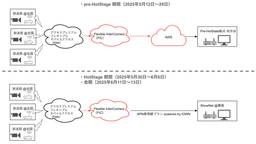

NTT docomo Business Engineers' Blog
https://engineers.ntt.com/
NTTドコモビジネス（旧NTT Com）のエンジニアによるブログです。
フィード
JSAI2025参加レポート 2
2
NTT docomo Business Engineers' Blog
こんにちは、イノベーションセンターのメディアAI プロジェクト（以下、PJ）の小林、加藤、岡本です。普段はコンピュータビジョンの技術開発やAI/機械学習（ML）システムの検証に取り組んでいます。 我々メディアAI PJでは5月27日から30日にかけてグランキューブ大阪で開催されたJSAI2025（2025年度 人工知能学会全国大会）に参加しました。本記事ではJSAI2025で発表された「画像・3D AI応用関連」、「VLM(Vision Language Model)」、「ハルシネーション対策」に関する興味深かった研究をいくつか紹介したいと思います。 目次 目次 JSAI2025とは 画像・3…
4日前

全国の放送局からの映像を ShowNet へ伝送するネットワークのアーキテクチャ紹介 ~Interop Tokyo 2025~ 5
NTT docomo Business Engineers' Blog
はじめに 背景 アーキテクチャ紹介 知見・ノウハウ まとめ はじめに こんにちは、イノベーションセンターの村田です。 NTTドコモビジネス株式会社は、日本最大級のネットワーク展示会である 「Interop Tokyo 2025（会場：幕張メッセ、会期：2025年6月11日〜13日）」 において構築される ShowNet に対し、全国の放送局からの映像を伝送するネットワークの一部をコントリビューションしました。 本記事では、映像伝送を実現したアーキテクチャ、およびその過程で得られた知見・ノウハウをお伝えします。 背景 Interop の準備から本番までは、次の3期間に分かれて進行します。 全国の…
5日前

NTT ComはNTTドコモビジネスに変わります
NTT docomo Business Engineers' Blog
NTTコミュニケーションズ開発者ブログチームの小林です。 私たちNTTコミュニケーションズ株式会社は、明日2025年7月1日より社名をNTTドコモビジネス株式会社と改め、NTTグループの法人向け総合ICT事業の中核として新たな出発を迎えることとなりました。 www.ntt.com これに伴い、1999年の設立より親しまれてきたロゴマーク（シャイニングアーク）と、NTT Comの名称については、本日で利用を終了します。 NTT Comの設立は、ちょうど26年前の1999年7月1日でした。長距離・国際通信事業を担う存在としてスタートを切り、いまその歴史に区切りを迎えることとなります。音声通信と固定…
13日前
Open XR Optics - 帯域保証型Point-to-Multipoint（P2MP）光伝送を実機検証してみた
NTT docomo Business Engineers' Blog
こんにちは、イノベーションセンターの安井です。 この記事では、Open XR Opticsという新しい光伝送技術が実装されたトランシーバーの実機検証結果をご紹介します。 本記事で以下を扱います。 1つの光信号を複数に分け、柔軟な帯域保証を可能にする新技術「Open XR Optics」 実機を用いた検証により、その基本性能、障害からの復旧挙動、そして実用上の注意点 5G基地局やデータセンター間接続など、将来のネットワークを支える技術の展望（可能性と課題） P2MP技術 Open XR Opticsとは 検証 検証構成 基本動作の確認 パワー 周波数 自動調整の完了に要する時間 障害復旧の挙動 …
13日前
セキュリティカンファレンス「Botconf 2025」に登壇してきた話
NTT docomo Business Engineers' Blog
こんにちは、NTT Com イノベーションセンターのNetwork Analytics for Security（NA4Sec）プロジェクトです。 この記事では、2025年5月20日-23日に開催されたセキュリティカンファレンスBotconf 2025について紹介します。 Botconfとは Team NA4Secとは 講演内容 カンファレンスの様子 おわりに Botconfとは Botconfは"The Botnet & Malware Ecosystems Fighting Conference"の略称で、その名の通り、ボットネットやマルウェアエコシステムに特化した国際的なセキュリティカン…
18日前
生成AI と Model Context Protocol サーバーによる 5G コア オペレーション自動化の取り組み紹介 〜Interop Tokyo 2025〜
NTT docomo Business Engineers' Blog
こんにちは、イノベーションセンターの福田です。 NTT コミュニケーションズ株式会社は、日本最大級のネットワーク展示会である 「Interop Tokyo 2025（会場：幕張メッセ、会期：2025年6月11日〜13日）」 において構築される ShowNet に対し、生成 AI と Model Context Protocol (MCP) による 5G コアオペレーション自動化のコントリビューションを行いました。 本記事ではその構築にあたって具体的にどのようなことを開発したのか、その実装を通して得た知見やノウハウを紹介します。 背景 どんなことをしたのか Model Context Proto…
20日前
変わりゆくモバイル市場とActive Multi-access SIMの未来 [Active Multi-access SIM開発シリーズ 第3回（全3回）]
NTT docomo Business Engineers' Blog
こんにちは。5G＆IoTサービス部の池です。IoT向けコネクティビティサービスの販売企画を担当しています。 これまで、「Active Multi-access SIM開発シリーズ」として、2回にわたりその特長や仕組み、開発秘話などをご紹介してきました。最終回となる今回は、モバイル回線に求められていることの変化、そしてActive Multi-access SIM(※)（以下、マルチアクセスSIM）の技術がこれからどのように進化していくのかについてお届けします。 これまでの記事はこちら 第1回：1枚のSIMでキャリアを冗長化！Active Multi-access SIMの特長と仕組み 第2回：…
1ヶ月前
Dify MCPプラグインを使って自然言語でSnowflakeからデータを取得してみた
NTT docomo Business Engineers' Blog
DifyのMCPプラグインとZapier MCPを利用してDifyとSnowflakeを連携させ、Snowflakeのデータを自然言語で扱ってみました。本記事では、その連携方法を中心に紹介したいと思います。 はじめに 利用したサービス Dify Zapier Snowflake 構成 連携設定 Snowflake の設定 Zapierの設定 Dify の設定 動作確認 まとめ 参考 はじめに こんにちは。NTTコミュニケーションズの大島です。普段は、クラウドサービスを中心に、データレイクやデータウェアハウスの検証をしています。 最近注目されているMCP (Model Context Proto…
1ヶ月前
フィッシングキット分析ハンズオン 〜 ドコモグループの学生向けテックワークショップでの取り組みを紹介
NTT docomo Business Engineers' Blog
みなさんこんにちは、イノベーションセンターの益本(@masaomi346)です。 Network Analytics for Security (以下、NA4Sec) プロジェクトのメンバーとして活動しています。 この記事では、2025年5月31日に開催されたドコモグループ学生向けテックワークショップでの取り組みについて紹介します。 ぜひ最後まで読んでみてください。 ドコモグループの学生向けテックワークショップについて ドコモグループでは、現場のエンジニアと一緒にハンズオン形式で学ぶことができる1dayのワークショップを毎年開催しています。 過去のテックワークショップ セキュリティ分野のテック…
1ヶ月前
サマーインターンシップ2025を開催します！
NTT docomo Business Engineers' Blog
NTTコミュニケーションズ（以下、NTT Com）を含めたドコモグループでは、この夏にインターンシップを開催します！ この記事では、その中でも NTT Com のリアルな業務を体験できる「現場受け入れ型インターンシップ」について紹介します。 現場受け入れ型インターンシップとは 募集ポスト 昨年のインターンシップの様子 まとめ 現場受け入れ型インターンシップとは NTTドコモや NTT Com の社員と一緒に働きながら、実務を体験していただくインターンシップです。 実際の職場で社員と共に、“本当に使われる技術” を用いてプロジェクトに参画。 メンターによる実務レビューを通じて、実践的なスキルと思…
1ヶ月前
AIで「変な音」を検知してみた
NTT docomo Business Engineers' Blog
本記事では、AI異音検知の概要、実装、検証例について、入門的な内容をご紹介します。 はじめに 異音検知とは 検証用データ AIによる異音検知 オートエンコーダーモデル 音データの中身 周波数の世界から音を見る Node-AIでのオートエンコーダーモデル作成 おわりに はじめに こんにちは、NTT Com イノベーションセンターの中野です。 普段は時系列データに対応したノーコードAI開発ツール「Node-AI」チームで、 お客さまのデータ分析支援やプロダクト開発チームのスクラムマスターとして活動しています。 さて、みなさんは「AI」と聞いて何を想像しますか？ 多くの人は、チャットができたり画像が…
1ヶ月前
セキュリティカンファレンス「BSides Tokyo 2025」に登壇してきた話
NTT docomo Business Engineers' Blog
みなさんこんにちは、イノベーションセンターの益本(@masaomi346)です。 Network Analytics for Security (以下、NA4Sec) プロジェクトのメンバーとして活動しています。 この記事では、2025年5月17日に開催されたセキュリティカンファレンスBSides Tokyo 2025で登壇したことについて紹介します。 BSides Tokyo ぜひ最後まで読んでみてください。 BSides Tokyoについて BSidesとは、情報セキュリティのコミュニティ主導で開催されているセキュリティカンファレンスです。 2025年5月時点では、1105のBSidesイ…
2ヶ月前
LLM推論を支える抽象化転送ライブラリ NVIDIA Inference Xfer Library (NIXL) について
NTT docomo Business Engineers' Blog
こんにちは、イノベーションセンターの鈴ヶ嶺です。 本記事では、NVIDIA Dynamo や vLLM などの LLM 推論フレームワーク向けに設計された高速・低遅延の抽象化転送ライブラリである NVIDIA Inference Xfer Library (NIXL) について解説します。 また、NVIDIA Dynamo に関してはこちらで解説していますので参考にしていただけると幸いです。 engineers.ntt.com まず、LLM 推論高速化(KV Cache)におけるメモリ転送の背景と課題をご紹介し、それを解決する NIXL の概要を説明します。 NIXL は Plugin により…
2ヶ月前
NVIDIA Dynamoについて調べてみた
NTT docomo Business Engineers' Blog
こんにちは。NTTコミュニケーションズの露崎です。本ブログでは2025年3月のGTCで紹介されたNVIDIA社のOSS Dynamoについて紹介します。 はじめに 特徴 インストールと基本動作 Dynamo Run Dynamo Serve 推論グラフとコンポーネント dynamo serveの起動の流れ 1. nats/etcdの起動 2. dynamo serveの起動 3. 動作確認 4. 終了 分散処理の仕組み まとめ はじめに こんにちは。NTTコミュニケーションズの露崎です。本ブログでは2025年3月のGTCで紹介されたNVIDIA社のOSS Dynamoについて紹介します。 NV…
2ヶ月前
生成AI向けのドキュメント変換技術 rokadoc 〜高い精度をどのように実現しているのか〜
NTT docomo Business Engineers' Blog
こんにちは。イノベーションセンター Generative AI チームの安川です。 今回は私の所属するチームで開発しているrokadocというプロダクトの内部で利用している技術要素に重点を置いて紹介します。 本記事では「ドキュメント変換技術」であるrokadocについて、内部で利用している技術について紹介します。 rokadocはドキュメントをアップロードするとそれを生成AIで扱いやすいテキストへ変換するという機能を持ちます。 ユーザはドキュメントの内容に応じて自身で複雑な処理を考える必要がないというメリットがありますが、一方でその内部ではレイアウト解析やAI-OCRなどの複雑な処理を行ってい…
2ヶ月前
開発の舞台裏〜Active Multi-access SIMが生まれるまでの挑戦と特許取得 [Active Multi-access SIM開発シリーズ 第2回（全3回）]
NTT docomo Business Engineers' Blog
こんにちは、クラウド＆ネットワークサービス部の古賀です。普段はクラウドサービスのサービス企画を担当するかたわら、デザインプロセスを業務に取り入れたサービス改善などの活動に参加しています。 前回の記事「 1枚のSIMでキャリアを冗長化！Active Multi-access SIMの特長と仕組み 」では、Active Multi-access SIMの特長や仕組み、活用シーンなどをご紹介させていただきました。第2回は本サービスの開発秘話について、サービス企画チームのメンバーにインタビューしましたので、その模様をお届けします。 マルチアクセスSIM開発のきっかけ 開発のこだわりポイント マルチアク…
3ヶ月前
社内で若手向けセキュリティイベント（1年目終了時 成果報告会）を開催しました
NTT docomo Business Engineers' Blog
こんにちは、マネージド&セキュリティサービス部の閏間です。このたび、社内で若手向けセキュリティイベントを開催したのでその紹介をします。草の根的な活動ですが、NTT Comではこういうことも行われているんだということを知ってもらえればと思います。 はじめに イベントの目的は、「業務棚卸しと将来像の明確化」「他組織を知って自業務に活かす」 発表者は幅広い部署から集まりました イベント準備もスムーズに進行しました イベント当日は大変盛り上がりました おわりに はじめに この4月に全社横断で入社2年目のセキュリティ系人材の方に集まってもらい、担当業務や1年間の成果、今後のキャリアプランを発表し合っても…
3ヶ月前
IETF 122で行われたMedia over QUIC Transportの相互接続試験に参加しました
NTT docomo Business Engineers' Blog
3 月 15 日 ~ 3 月 21 日に開催された IETF 122 で、Media over QUIC Transport(MoQT)の相互接続試験に参加しました。 相互接続試験では、NTT Communications(以下 NTT Com) が OSS で公開している moq-wasm を持ち込み、4 種類の MoQT 実装と接続できました。 本記事では、Media over QUIC Transport(MoQT)の概要や、相互接続試験で遭遇した問題や、相互接続試験の結果について報告します。 はじめに Media over QUIC Transport(MoQT)とは 取り組みの背景 …
3ヶ月前
フィッシングサイトの仕組みを知ることで、フィッシング詐欺を理解する
NTT docomo Business Engineers' Blog
みなさんこんにちは、イノベーションセンターの益本(@masaomi346)です。 Network Analytics for Security (以下、NA4Sec) プロジェクトのメンバーとして活動しています。 この記事ではフィッシング詐欺がどのように行われているのか、フィッシングサイトがどのような仕組みで動作しているのか、注意喚起を兼ねて紹介します。 ぜひ最後まで読んでみてください。 フィッシング詐欺について フィッシング詐欺がどのように行われているのか フィッシングサイトがどのように構築されているのか フィッシングサイトがどのように動作しているのか どんな情報を窃取しているのか 窃取した…
3ヶ月前
Timestamping を使ってネットワークレイテンシを分析することで、ゲスト VM の Disk 性能低下問題を解決した
NTT docomo Business Engineers' Blog
OpenStack の Compute Node を更新する際にゲスト VM の Disk 性能が低下する問題を、 Linux の Timestamping という機能を使ってネットワークレイテンシを分析することで解決できた事例をご紹介します。 本事例は fukabori.fm #127 でもご紹介しています。 はじめに 前提: 仮想サーバの構成 初期調査 仮想化レイヤの問題を切り分ける CPv2 と CPv3 の違いに着目する CPv3 において RTT が高い問題を切り分ける Timestamping 実験の構成図 RX 方向のレイテンシを分析する RX 方向のタイムスタンプを取得するコー…
3ヶ月前
OTネットワーク向け国産IDS「OsecT」の台帳連携機能について
NTT docomo Business Engineers' Blog
こんにちは、NTT Comの上田です。 普段は、NTT Com内製のOT（Operational Technology：制御・運用技術）ネットワーク向け国産IDS（Intrusion Detection System：不正侵入検知システム）である「OsecT（オーセクト）」の開発・保守運用業務などに取り組んでいます。 本記事では、「OsecT」の台帳連携機能を紹介します。 はじめに OsecTの台帳連携機能について 開発の背景 台帳連携機能 おわりに はじめに 近年、従来はインターネットや情報ネットワークから隔離されていたOTネットワークが、 IoTの活用やDXによる生産性向上などのためにこれ…
3ヶ月前
OsecT アセスメントレポート 自動生成機能のご紹介
NTT docomo Business Engineers' Blog
「OT環境のアセスメント資料を急いで作らないといけない！大変だ！巷で噂のAIみたいに資料を自動でサクッと素早く作ってくれる機能が欲しい！」 「突然セキュリティ担当になってアセスメントレポートを作成せよと言われてしまった！知識もないし何をすべきか分からない…」 このようなお悩み、ありませんでしょうか？ そのような時、OsecTならワンクリックでアセスメントレポートを自動生成できます！ はじめに OsecTとは アセスメントとは レポート自動生成機能の概要 レポート機能作成の背景 レポートの魅力 充実した分析項目 パワーポイントで編集可能 期間指定で比較 CSV一括ダウンロード機能 データの長期保…
3ヶ月前
生成 AI をもっと気軽に、安全に使うための「chakoshi」をリリースした話
NTT docomo Business Engineers' Blog
chakoshi とは なぜ生成 AI の安全性が求められるのか 生成 AI の安全性の現状 生成 AI の安全性対策案 日本語に特化した入出力チェックができる chakoshi chakoshi の特徴について 日本語の性能が高い カスタマイズ性が高い 終わりに 初めまして。イノベーションセンターの山本（@yyo616）です。普段は生成 AI に関連する新規プロダクトの開発や技術検証をしています。先日、生成 AI の安全性向上サービス「chakoshi」と、生成 AI の回答精度を高めるためのドキュメント変換サービス「rokadoc」のベータ版をリリースしました。そこで本記事では chako…
3ヶ月前
GoogleのLLM「Gemini」でコードレビューをするGitHub Actionsを自力で構築してみた
NTT docomo Business Engineers' Blog
ビジネスdアプリ開発チームの立木です。現在、私たちのチームでは生成AIによる開発効率の向上を検討しています。その一環として、コードレビューの自動化を検討しています。 そこで、本記事では検証の一環として勉強も兼ねて、GoogleのLLM「Gemini」でコードレビューをするGitHub Actionsを自力で構築してみたのでその方法を紹介します。 Geminiとは Google AI Studio Vertex AI Google Gen AI SDK 着想の背景 コードレビューの観点 完成したもの ファイルの構成 処理の流れ gemini-code-review.yml gemini_revi…
3ヶ月前
1枚のSIMでキャリアを冗長化！Active Multi-access SIMの特長と仕組み [Active Multi-access SIM開発シリーズ 第1回（全3回）]
NTT docomo Business Engineers' Blog
本記事では、Active Multi-access SIMの特長やユースケースとともに、1枚のSIMで通信キャリアの冗長化を実現する仕組みについてご紹介いたします。
3ヶ月前
突然のデータ不整合！原因は Realtime Database の更新処理かも？ 更新失敗を防ぐ TypeScript の解決策
NTT docomo Business Engineers' Blog
TypeScript で Firebase の Realtime Database を利用すると、使い方次第でエラーが生じてしまう可能性があります。これは TypeScript の型チェックでは検知が難しいような undefined なプロパティを格納しようとしてしまうことがあるためです。この問題が起こるとデータ更新処理が失敗し、不整合な状態が発生してしまいます。 この記事では その問題を防ぐ方法を紹介します。 はじめに 環境 背景 Firebase Realtime Database の仕様 TypeScript の Partial 型 エラーの例 解決策 全パターンの更新関数を用意する 更…
4ヶ月前
サーバレスをフル活用したビジネスｄアプリのアーキテクチャ（後編）
NTT docomo Business Engineers' Blog
この記事はコミュニケーション&アプリケーションサービス部でビジネスdアプリを開発している丸山、葛岡、露口、西谷、富田の共同執筆です。 今回は、NTTコミュニケーションズで提供するモバイルアプリ、「ビジネスdアプリ」の具体的なアーキテクチャやCI/CDの仕組みに焦点を当てて説明します。
4ヶ月前
事業優先度に縛られずに、プロダクトの魅力度向上を実現するための改善手法——NeWorkにおける少人数チーム設置による改善事例
NTT docomo Business Engineers' Blog
本記事では、ソフトウェアプロダクト開発において、スクラムから独立した エンジニア × デザイナ × マーケタ の少人数チーム(以下、ミニチーム)を作って活動することにより、事業優先度が低く後回しになりがちなユーザビリティの課題を解決していった事例や学びを紹介しています。 目次 目次 はじめに NeWorkとは NeWorkのチーム編成 エンジニアが自由にプロダクト改善に取り組むことの難しさ ミニチームの発足 ミニチームの課題解決フロー 1. 課題選定 2. 見つけた課題が解決する価値のある課題か見極める 3. 他チームとの連携 4. デリバリープロセス ミニチームの改善事例 ミニチームのメリッ…
4ヶ月前
生成AI向けのドキュメント変換技術 rokadoc の使い方
NTT docomo Business Engineers' Blog
こんにちは。イノベーションセンター Generative AI チームの安川です。今回はrokadocのパブリックベータ版（ https://rokadoc.ntt.com/ ）が公開されたため、その紹介と解説をします。 本記事では「ドキュメント変換技術」であるrokadocの概要を説明した上で、実際の使い方や結果を紹介します。 使い方の部分では、WebUIを用いて簡便にドキュメント解析を行う方法や、解析結果が実際にRAG（Retrieval-Augmented generation、検索拡張生成）で有用なのかを示します。また、手元のRAGへ組み込むためにAPI経由で処理を実行する方法について…
4ヶ月前
LLMにJSONやソースコードを出力させるStructured Generationの技術
NTT docomo Business Engineers' Blog
こんにちは、イノベーションセンターの加藤です。この記事では、大規模言語モデル(LLM)にJSONやソースコードを正しく出力させるための生成手法であるStructured Generationについて紹介します。 Structured Generationとは パーサーを用いた制約手法 正則言語とは 正則言語のStructured Generation 文脈自由言語とは 字句解析について 正則言語+文脈自由言語のStructured Generation まとめ Structured Generationとは 大規模言語モデル(LLM)はよくチャットボットとしての活用が目立ちますが、LLMの入出…
4ヶ月前